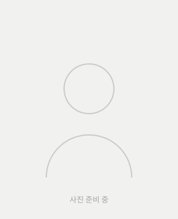

대한변협 등록 형사법 전문
[변호사 이름] 변호사
사법시험 출신 · 26년 법조 경력
거래 경위와 증거를 법리적으로 분석해 이의제기 · 합의 · 소송 중 가장 적합한 대응을 설계합니다.
[전문분야 등록증 이미지]
정상적인 거래로 받은 돈인데, 신고 한 번으로 계좌와 카드, 연결된 통장까지 묶였습니다.
은행에 물어봐도 ‘소송 외에는 방법이 없다’는 안내만 받는 경우가 많습니다.
혼자 고민하지 마세요. 지금 상황부터 정리해 드립니다.
상담 신청WHY
물건을 팔고 받은 대금이 보이스피싱 피해금이었던 경우
심부름인 줄 알고 전달한 돈 때문에 자금세탁 공범으로 의심받는 경우
모르는 돈이 입금된 뒤 신고되고, 해제를 조건으로 돈을 요구받는 경우
보이스피싱과 무관한 거래가 보이스피싱으로 신고되어 연결된 계좌 전체가 정지된 경우
RISK
채권소멸절차 개시 공고 후 2개월이 지나면 예금 채권이 소멸되고 피해환급금으로 지급될 수 있습니다.
통신사기피해환급법 제9조명의인은 전자금융거래 제한 대상이 되어 다른 계좌의 비대면 거래, 신규 계좌 개설까지 어려워질 수 있습니다.
피해 금액을 넘는 내 생활자금까지 함께 묶일 수 있습니다.
은행 이의제기는 보수적으로 처리되어 받아들여지기 쉽지 않은 경우가 많습니다.
시한이 있는 절차입니다. 오늘 확인하세요.
상담 신청SOLUTION

“정당한 원인으로 받은 돈이므로 돌려줄 의무가 없다”는 사실을 법원이 확인하게 하는 소송입니다.
어떤 방법이 맞는지는 사안마다 다릅니다. 내 상황에 맞는 방법부터 확인하세요.
상담 신청PROCESS
거래 내역 · 대화 기록 · 입금 경위
사안에 따라 이의제기 · 합의로 더 빨리 마무리되는 경우도 있습니다.
1단계는 지금 바로 시작할 수 있습니다.
상담 신청WHY YUIL
지급정지 사건은 법리만으로도, 수사 경험만으로도 부족합니다. 두 시선이 함께 검토할 때 놓치는 부분이 줄어듭니다.

사법시험 출신 · 26년 법조 경력
거래 경위와 증거를 법리적으로 분석해 이의제기 · 합의 · 소송 중 가장 적합한 대응을 설계합니다.
경찰 지능범죄 수사 16년 경력 (광역수사대 출신)
금융사기 사건이 실제로 어떻게 수사되는지 알기에, 계좌 명의인이 준비해야 할 소명 자료를 꼼꼼히 짚어드립니다.
FAQ
피해자가 금융회사에 신고하면 피해금이 입금된 계좌가 지급정지될 수 있습니다. 명의인이 가담했는지를 먼저 확인하는 절차가 아니어서, 정상 거래로 받은 돈이라도 정지되는 경우가 있습니다.
계좌가 막힌 날이 아니라 채권소멸절차 개시 공고일부터 계산합니다. 공고 여부와 날짜는 은행 안내 문자 등으로 확인할 수 있고, 정확한 날짜는 상담에서 함께 확인해 드립니다.
정당한 거래라는 객관적 자료가 충분하면 이의제기로 해결되는 경우도 있습니다. 다만 받아들여지지 않는 동안에도 기간은 흐르므로, 시한을 고려해 소송을 함께 검토하는 경우가 많습니다.
시간이 지나면 저절로 풀리는 구조는 아닙니다. 이의제기 · 합의 · 소송 중 어떤 방법으로 대응하는지, 사건이 어떻게 진행되는지에 따라 기간이 달라집니다.
합의가 어려운 경우 채무부존재확인소송을 검토할 수 있습니다. 소송에서는 법원을 통해 상대방에게 소장이 송달되는 절차가 진행됩니다.
사안에 따라 수사기관의 연락을 받는 경우가 있습니다. 그때 거래 경위를 일관되게 설명할 수 있도록 거래 내역 · 대화 기록을 지우지 말고 미리 정리해 두시는 것이 중요합니다.
[첫 상담 비용 안내 — 확인 후 기입] 사건을 맡기실 경우의 비용은 사건 내용을 확인한 뒤 미리 안내해 드립니다.
궁금한 점이 남았다면 직접 물어보세요.
카카오톡 상담CONSULT
남겨주신 연락처로 변호사가 직접 연락드립니다.
준비하시면 좋은 것: 은행 안내 문자, 막힌 날짜, 거래 내역 · 대화 기록